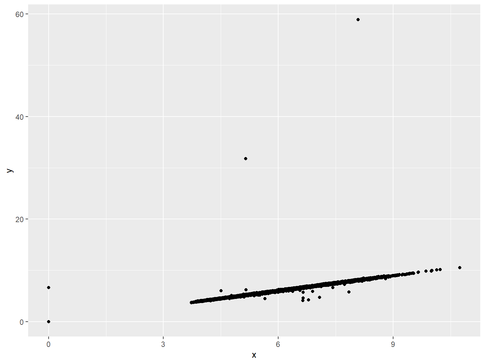
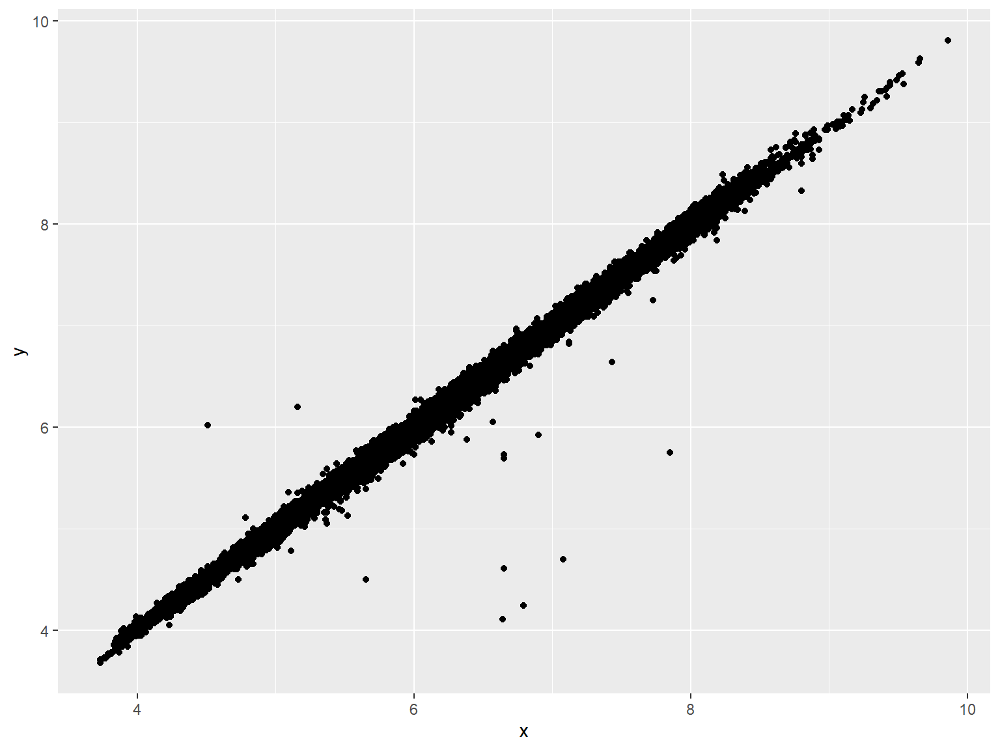
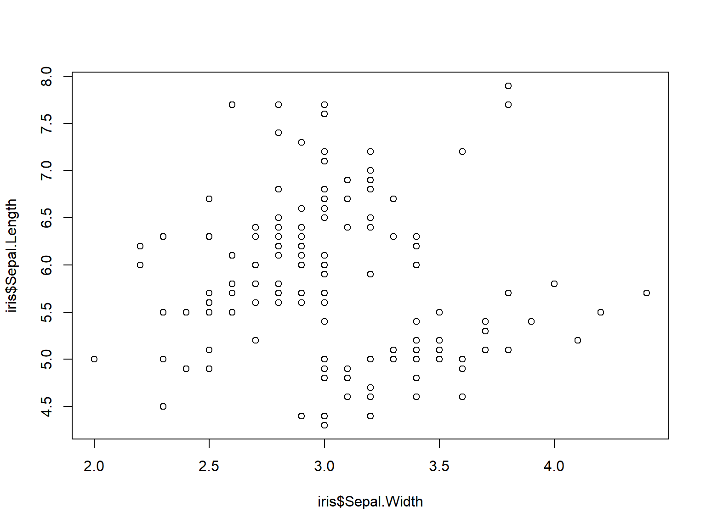
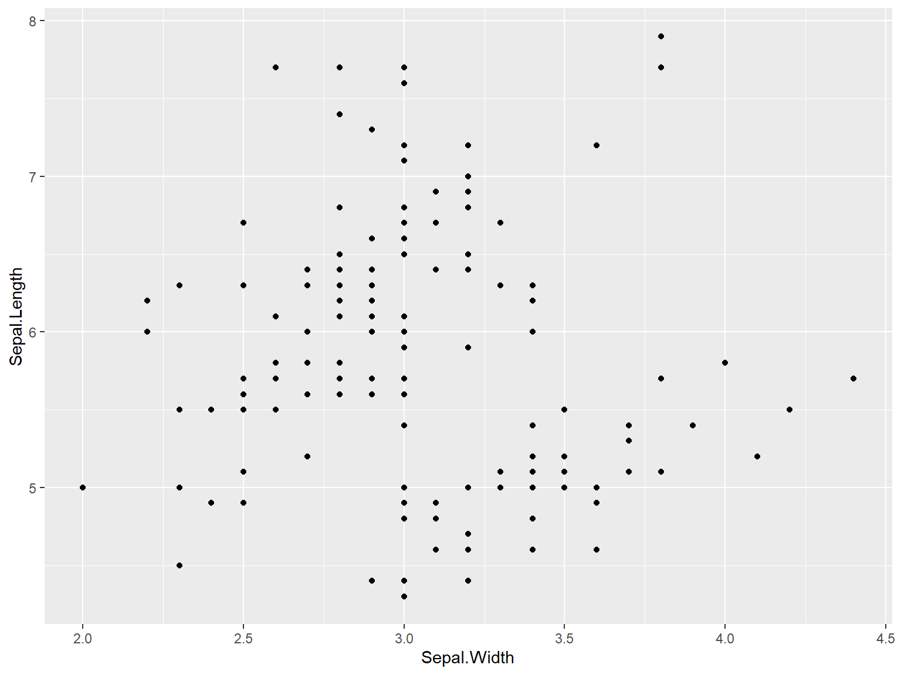
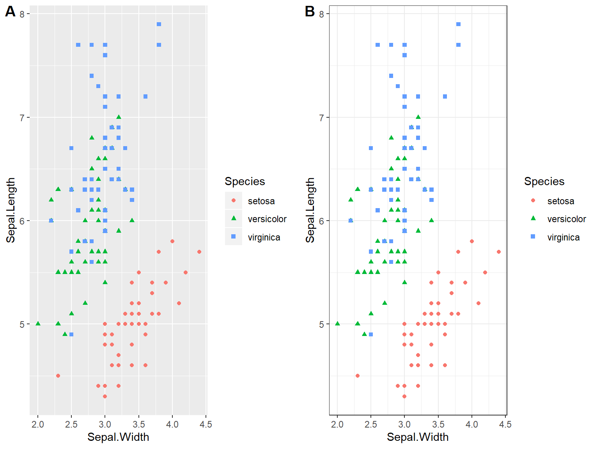

TALLER DE PROGRAMACIÓN EN R
Lección 2️⃣

Roy Yali Samaniego 😄
https://github.com/ryali93
✉️ ryali93@gmail.com
UNMSM - Ingeniería Geográfica
2020 - 02 - 28
NO OLVIDAR
Nombres de variables
- Los nombres no pueden empezar con números
- Evitar nombres en uso
Ahora tú
Cómo lo resolvería en R
5! = 5 x 4 x 3 x 2 x 1
Guardar en una nueva variable el quinto elemento del siguiente vector, cambiar el cuarto elemento por 0
x <- c(0, 0, 1, 3, 5, 1)
Sigues tú
vec <- c(6, 1, 3, 6, 10, 5)
df <- data.frame(
name = c("John", "Paul", "George", "Ringo"),
birth = c(1940, 1942, 1943, 1940),
instrument = c("guitar", "bass", "guitar", "drums")
)Predecir qué hacen las siguientes líneas
Instalación de librerías
https://github.com/rstudio/Intro/tree/master/slides (página 98)
Manipular datos
## # A tibble: 53,940 x 10
## carat cut color clarity depth table price x y z
## <dbl> <ord> <ord> <ord> <dbl> <dbl> <int> <dbl> <dbl> <dbl>
## 1 0.23 Ideal E SI2 61.5 55 326 3.95 3.98 2.43
## 2 0.21 Premium E SI1 59.8 61 326 3.89 3.84 2.31
## 3 0.23 Good E VS1 56.9 65 327 4.05 4.07 2.31
## 4 0.290 Premium I VS2 62.4 58 334 4.2 4.23 2.63
## 5 0.31 Good J SI2 63.3 58 335 4.34 4.35 2.75
## 6 0.24 Very Good J VVS2 62.8 57 336 3.94 3.96 2.48
## 7 0.24 Very Good I VVS1 62.3 57 336 3.95 3.98 2.47
## 8 0.26 Very Good H SI1 61.9 55 337 4.07 4.11 2.53
## 9 0.22 Fair E VS2 65.1 61 337 3.87 3.78 2.49
## 10 0.23 Very Good H VS1 59.4 61 338 4 4.05 2.39
## # ... with 53,930 more rowsManipular datos

Comparaciones lógicas
| Operador | Resultado | Comparación |
|---|---|---|
x > 3 |
c(F, F, F, T, T) |
Mayor que |
x >= 3 |
c(F, F, T, T, T) |
Mayor o igual que |
x < 3 |
c(T, T, F, F, F) |
Menor que |
x <= 3 |
c(T, T, T, F, F) |
Menor o igual que |
x == 3 |
c(F, F, T, F, F) |
Igual a |
x != 3 |
c(T, T, F, T, T) |
Diferente de |
x = 3 |
Igual que <- |
%in%
## [1] TRUE## [1] FALSE## [1] TRUE TRUE FALSE FALSEOperaciones lógicas
Puedes combinar evaluaciones lógicas con &, |, xor, !, any, y all
## [1] FALSE FALSE TRUE TRUEOperaciones lógicas
| Operador | Evaluación |
|---|---|
a & b |
Tanto a como b son VERDADEROS |
a | b |
Al menos uno de a y b es VERDADERO (o) |
xor(a, b) |
a es VERDADERO o b es VERDADERO, pero no ambos |
!a |
No a (VERDADERO va a FALSO, FALSO va a VERDADERO) |
any(a, b, c) |
Al menos uno de a, b o c es VERDADERO |
all(a, b, c) |
Cada uno de a, b y c es VERDADERO |
Ejercicio
- Convierta estas oraciones en pruebas lógicas en R
- ¿w es positivo?
- ¿x es mayor que 10 y menor que 20?
- ¿El objeto y es la palabra
"febrero"? - ¿Cada valor de z es un día de la semana?
Consultas lógicas
Combinar pruebas lógicas con subconjuntos es una práctica común
## # A tibble: 8 x 10
## carat cut color clarity depth table price x y z
## <dbl> <ord> <ord> <ord> <dbl> <dbl> <int> <dbl> <dbl> <dbl>
## 1 1.07 Ideal F SI2 61.6 56 4954 0 6.62 0
## 2 1 Very Good H VS2 63.3 53 5139 0 0 0
## 3 1.14 Fair G VS1 57.5 67 6381 0 0 0
## 4 1.56 Ideal G VS2 62.2 54 12800 0 0 0
## 5 1.2 Premium D VVS1 62.1 59 15686 0 0 0
## 6 2.25 Premium H SI2 62.8 59 18034 0 0 0
## 7 0.71 Good F SI2 64.1 60 2130 0 0 0
## 8 0.71 Good F SI2 64.1 60 2130 0 0 0Guardar resultados
## # A tibble: 5 x 10
## carat cut color clarity depth table price x y z
## <dbl> <ord> <ord> <ord> <dbl> <dbl> <int> <dbl> <dbl> <dbl>
## 1 4.01 Premium I I1 61 61 15223 10.1 10.1 6.17
## 2 4.01 Premium J I1 62.5 62 15223 10.0 9.94 6.24
## 3 4 Very Good I I1 63.3 58 15984 10.0 9.94 6.31
## 4 5.01 Fair J I1 65.5 59 18018 10.7 10.5 6.98
## 5 4.5 Fair J I1 65.8 58 18531 10.2 10.2 6.72Valores vacíos o nulos
Por lo general, eliminar toda la fila debido a un error es exagerado. Es mejor reemplazar selectivamente los valores problemáticos con valores faltantes. En R, los valores faltantes se indican con NA
## [1] NA NA## [1] FALSE TRUENA.rm
Muchas funciones (por ejemplo, suma y media) tienen el argumento na.rm para eliminar los valores faltantes antes del cálculo.
## [1] NA## [1] 10Asignación
Puede usar subconjuntos con <- para cambiar valores individuales dentro de un objeto
## Min. 1st Qu. Median Mean 3rd Qu. Max.
## 0.000 4.710 5.700 5.731 6.540 9.860## [1] 0 0 0 0 0 0 0 0## Min. 1st Qu. Median Mean 3rd Qu. Max. NA's
## 3.730 4.710 5.700 5.732 6.540 9.860 8Asignación
## Min. 1st Qu. Median Mean 3rd Qu. Max.
## 0.000 4.720 5.710 5.734 6.540 58.900diamonds$y[diamonds$y == 0] <- NA
y_big <- diamonds$y > 20
diamonds$y[y_big] <- NA
summary(diamonds$y)## Min. 1st Qu. Median Mean 3rd Qu. Max. NA's
## 3.680 4.720 5.710 5.733 6.540 9.810 9Gráfico
## Warning: Removed 10 rows containing missing values (geom_point).
VISUALIZACIÓN
El gráfico simple ha traído más información a la mente del analista de datos que cualquier otro dispositivo. – John Tukey
plot
- sencillo
- hace cosas diferentes en diferentes contextos (generalmente de una manera útil)
- difícil de personalizar
plot

ggplot2

ggplot2
par(mfrow=c(1,2))
iris1 <- ggplot(iris, aes(x=Sepal.Width, y=Sepal.Length, shape = Species)) +
geom_point(aes(color = Species))
iris2 <- ggplot(iris, aes(x=Sepal.Width, y=Sepal.Length, shape = Species)) +
geom_point(aes(color = Species)) + theme_bw()
plot_grid(iris1, iris2, labels = "AUTO")
CONDICIONALES
La toma de decisiones es una parte importante de la programación. Esto se puede lograr en la programación R usando la nomenclatura condicional if else.
If
- Si expresion es TRUE, la instrucción se ejecuta. Pero si es FALSO, no pasa nada.
- Aquí, expresion puede ser un vector lógico o numérico, pero solo se tiene en cuenta el primer elemento.
- En el caso del vector numérico, cero se toma como FALSO, el resto como VERDADERO.
If…Else
La parte else es opcional y solo se evalúa si expresion es FALSE. Es importante tener en cuenta que else debe estar en la misma línea que las llaves de cierre de la instrucción if.
Condicionales
x <- 0
if (x < 0) {
print("Numero negativo")
}else if (x > 0) {
print("Numero positivo")
} else {
print("Cero")
}## [1] "Cero"Condicionales
Python
temp = [15, 22, 30]
suelo= ["seco", "humedo", "charcos"]
valtemp = temp[0]
valsuelo= suelo[2]
if 12<= valtemp < 22 and valsuelo =="seco":
print("Cielo despejado")
elif valtemp == 22 or valsuelo == "humedo":
print("lluvia leve")
elif valtemp > 22 and valsuelo=="charcos":
print("lluvia severa")
else: print(" Faltan datos")## Faltan datosCondicionales
R
temp <- c(15, 22, 30)
suelo <- c("seco", "humedo", "charcos")
valtemp <- temp[1]
valsuelo <- suelo[3]
if (valtemp %in% 12:22 & valsuelo =="seco") {
print("\nCielo despejado")
} else if (valtemp == 22 | valsuelo == "humedo"){
print("\nlluvia leve")
} else if (valtemp > 22 & valsuelo=="charcos"){
print("\nlluvia severa")
} else {
print("\nFaltan datos")
}## [1] "\nFaltan datos"Ejercicios
- Determinar la solución de una ecuación de segundo grado
- Realizar la ecuación del MRUV (Movimiento rectilinio uniforme variado)
ITERADORES, BUCLES O LOOPS
Los bucles son una de las estructuras fundamentales en la programación. Los bucles permiten iterar sobre cada elemento en una secuencia, uno a la vez, y hacer algo con esos elementos.
FOR
Un bucle for es muy valioso cuando necesitamos iterar sobre una lista de elementos o un rango de números. Loop se puede usar para iterar sobre una lista, marco de datos, vector, matriz o cualquier otro objeto. Los tirantes y el corchete son obligatorios.
FOR
# Creando un vector de frutas
frutas <- c('Apple', 'Orange', 'Passion fruit', 'Banana')
# Declarando el bucle for
for ( i in frutas){
print(i)
}## [1] "Apple"
## [1] "Orange"
## [1] "Passion fruit"
## [1] "Banana"WHILE
Un bucle es una declaración que continúa ejecutándose mientras se cumple una condición. La sintaxis para un ciclo while es la siguiente:
WHILE
# creando la expresión con valor 1
inicio <- 1
# Creando el loop
while (inicio <= 5){
# Ver donde estamos
cat('Este es el ciclo número ', inicio)
# Agregar 1 a la variable inicio despues de cada iteracion
inicio <- inicio + 1
print(inicio)
}## Este es el ciclo número 1[1] 2
## Este es el ciclo número 2[1] 3
## Este es el ciclo número 3[1] 4
## Este es el ciclo número 4[1] 5
## Este es el ciclo número 5[1] 6Otros iteradores
- repeat
- do-while (*otros leguajes)
Control de flujo * break, next
Ejercicios
Cree un script R que devuelva la cantidad de valores que son mayores que la media de un vector. Tienes permitido usar mean().
Utilizando i <- 1, escriba un bucle while() que imprima la variable i, (que se incrementa de 1 a 5), y se usa break para salir del bucle si i es igual 3.
Escriba un bucle for() que imprima todos los valores excepto 3 en la siguiente variable: i <- 1:5
Utilice un bucle for anidado (un bucle for dentro de un bucle for) que produce la siguiente matriz, preasigne la matriz con NA valores.
FUNCIONES
Una función, en un entorno de programación, es un conjunto de instrucciones. Un programador crea una función para evitar repetir la misma tarea o reducir la complejidad.
FUNCIONES
Una función debería ser:
- Escrito para llevar a cabo una tarea específica
- Puede o no incluir argumentos
- Contener un cuerpo
- Puede o no devolver uno o más valores
FUNCIONES
Crear una función que simule una suma
a <- 5
b <- 6
suma <- function(valor1, valor2){
resultado <- valor1 + valor2
return(resultado)
}
suma(a, b)## [1] 11FUNCIONES
Cree una función que, dado un vector, imprima por pantalla la media y la desviación estándar, opcionalmente también imprimirá la mediana.
vector <- c(1,5,6,3,4)
estadisticos <- function(entrada, incluir_mediana = FALSE)
{
media = mean(entrada)
desv_estandar = sd(entrada)
cat("media: ", media)
cat("\ndesv. estandar: ", desv_estandar)
if (incluir_mediana){
mediana = median(entrada)
cat("\nmediana: ", mediana)
}
}
estadisticos(vector)## media: 3.8
## desv. estandar: 1.923538Ejercicios
- Cree una función definida por el usuario para crear una matriz y devolver la misma.
- Cree una función que al darle una palabra, devuelva la posición de las letras de la palabra en el vector de letras. Por ejemplo, si la palabra es “abd”, la función devolverá 1 2 4.
- más ejercicios